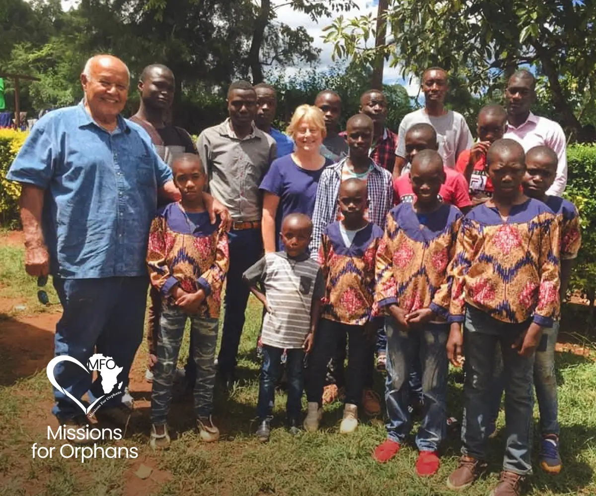
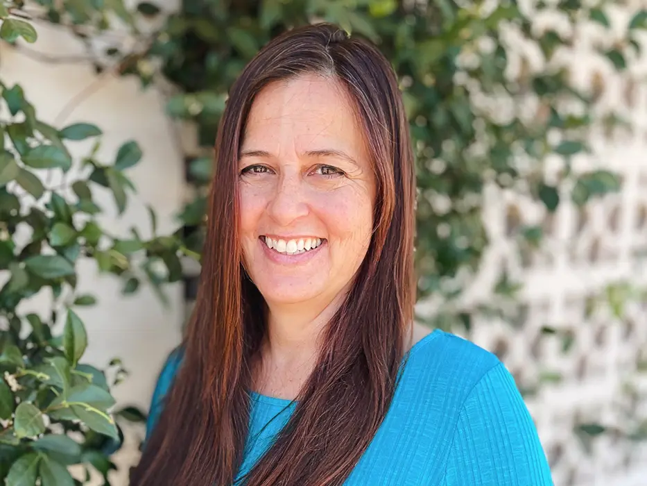
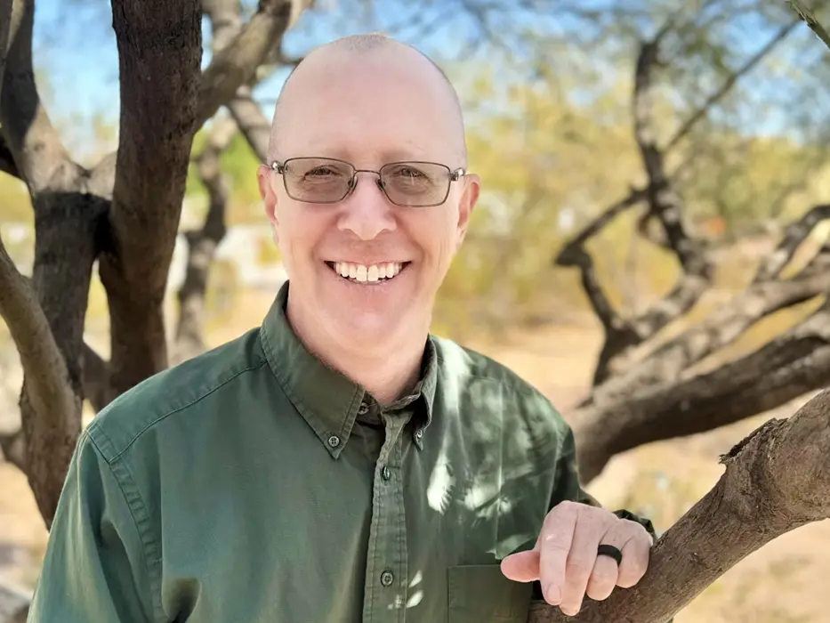

Who we are
A family‑owned and family‑run non‑profit. Our directors live in Kenya and know every boy, widow and village we serve.
Our story
“These are just kids, regular kids, living in conditions that America has long forgotten.”Lani Orosco, co‑founder

In 2008, while on a humanitarian mission in Kenya, Coney Orosco, co‑founder of Missions for Orphans, set out to build a dormitory for Foundation Stone Orphanage in Bondo. During that visit, at Barkowino Primary School, he met a young girl born with bladder exstrophy who urgently needed medical care that her family could not reach.
That moment led to the founding of Missions for Orphans, a 501(c)(3) non‑profit dedicated to meeting needs like hers. All donations to Missions for Orphans are tax deductible.
Today we work mainly in Kipsaina, outside Kitale, where we run a boys' home and support the surrounding villages. We also start and run preschools in Pokot villages. Our hope is to reach beyond Kipsaina, across Trans Nzoia and the Rift Valley.
Meet the team
 Coney OroscoCo‑founder
Coney OroscoCo‑founder Lani OroscoCo‑founder
Lani OroscoCo‑founder Ryan OroscoDirector
Ryan OroscoDirector Bianca OroscoFamily
Bianca OroscoFamily
Tisa WallingFamily
Jeff WallingFamily Edward & IsabelHouse parents
Edward & IsabelHouse parentsSupport our work
 Orphan careFood, school and a home for the boys of Kipsaina.Give
Orphan careFood, school and a home for the boys of Kipsaina.Give WidowsFood every six weeks and new two‑room homes.Give
WidowsFood every six weeks and new two‑room homes.Give Community outreachMedical missions, school fees and village programs.Give
Community outreachMedical missions, school fees and village programs.Give Onsite projectsThe farm, the safety wall and building on our property.Give
Onsite projectsThe farm, the safety wall and building on our property.Give Where it's needed mostWe put your gift where the need is greatest today.Give
Where it's needed mostWe put your gift where the need is greatest today.Give